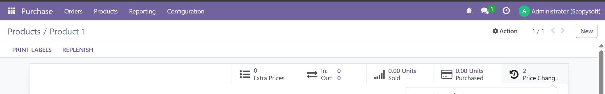
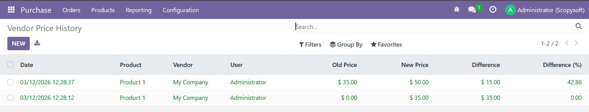
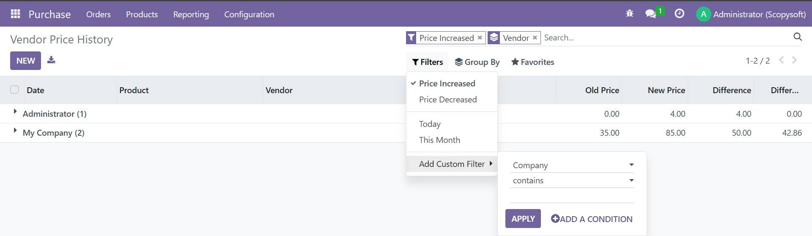

Never lose track of vendor price changes again. A complete automatic audit trail — built right into Odoo.
Install once, and every future vendor price change is automatically captured with full context — no extra setup required.
Every change to a vendor price is recorded automatically, including old price, new price, timestamp, and the user who made the change.
See exactly which vendor's price changed, making it easy to compare price history across multiple vendors for the same product.
Instantly shows the price difference in both absolute value and percentage so you can spot significant price movements at a glance.
Access the full vendor price history directly from the product form with a smart button. History available on both templates and variants.
Filter by Price Increased or Decreased. Group by Product, Vendor, User, or Date to instantly find patterns across your purchasing data.
All tracked data is stored in standard Odoo records — filter, group, and export vendor price history to Excel with built-in Odoo tools.
This is exactly what you get after installing — no mock-ups, no demo data.
📍 Smart button on product form — shows total vendor price changes

📋 Full audit trail — date, product, vendor, user, old price, new price, difference

🔍 Filter by Price Increased/Decreased — Group by Vendor, Product, User or Date

No configuration needed. The module hooks into Odoo's write mechanism and silently logs every vendor price change.
Install via the Odoo App Store. No extra settings, no configuration wizards. Works immediately on install.
Any time a vendor price is updated on a product — whether manually, via import, or by another module — a tracking record is created.
Once price changes are recorded, a smart button appears on the product showing the total number of changes. Click it to see the full history.
All vendor price history records are accessible under Purchase → Configuration → Vendor Price History for a company-wide overview.
Each tracking entry is a full Odoo record, searchable, filterable, and exportable.
| Field | Description | Type |
|---|---|---|
| product_tmpl_id | Product that had its vendor price changed | Many2one |
| partner_id | Vendor whose price changed | Many2one |
| old_price | Vendor price before the change | Float |
| new_price | Vendor price after the change | Float |
| price_difference | Absolute difference (new − old) | Float (computed) |
| price_difference_percent | Percentage change | Float (computed) |
| user_id | User who triggered the change | Many2one |
| company_id | Company context at time of change | Many2one |
| create_date | Exact date and time of change | Datetime |
Everything you need to slice and analyze vendor price data is built in.
| Type | Options |
|---|---|
| Filters | Price Increased · Price Decreased · Today · This Month |
| Group By | Product · Vendor · User · Date (by month) |
| Search | By Product name · Vendor name · User name |
| Export | All records exportable to Excel via standard Odoo export |
No. The module begins tracking from the moment it is installed. Any vendor price changes that happened before installation are not captured.
It tracks ALL vendor price changes across ALL products and ALL vendors — automatically, with no configuration needed.
The smart button only appears after at least one vendor price change has been recorded for that product. Change any vendor price and save — the button will appear immediately.
Yes. The company context is recorded on every tracking record. Works correctly in multi-company Odoo setups out of the box.
Email us at opeyemiajetunmobi9@gmail.com and we will respond within 1–2 business days.